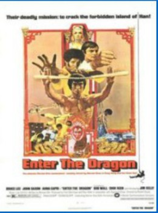

Enter the Dragon (1973)


Their deadly mission: to crack the forbidden island of Han!

País:Estados Unidos, 102 minutos.
Idiomas:Cantonés, Inglés
GénerosAcción
Director/es:Robert Clouse
Guionistas:Michael Allin
Códec de vídeo:Unknown
Número: 662
TomatoMeter:

--

--
Clasificación IMDb:


7.6/10 (2K votos)
Certificación:
Argumento:
A martial artist agrees to spy on a reclusive crime lord using his invitation to a tournament there as cover.
Reparto
Bruce Lee (Como Lee), John Saxon (Como Roper), Jim Kelly (Como Williams), Sek Kin (Como Han), Robert Wall (Como Oharra)
Medio: Archivo de video,
Localización: D:\PELICULAS\ACTORES\Bruce Lee\Enter the Dragon [1973]\Enter the Dragon [1973] [1080p] [Dual Audio].mp4
Prestado: No
Rel. aspecto: Unknown